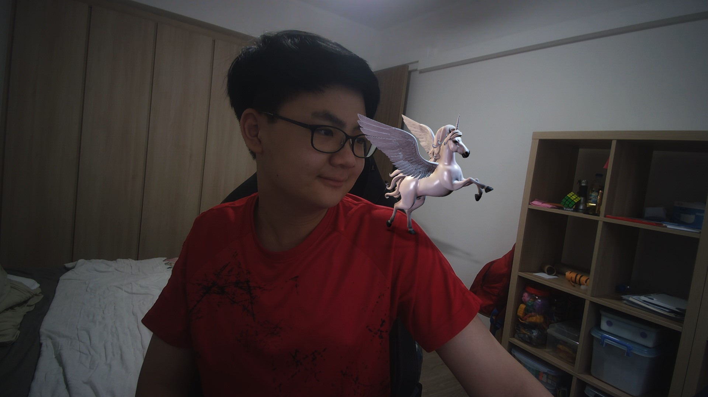

My first encounter with teaching was in 2025. That year, the electronics class had frequent changes in teachers, and as such the teaching of the syllabus slowed a bit. In the electronics syallbus, there is the written paper and a coursework. The coursework requires much less reference to the syllabus as compared to the written paper. During half of 2025, we were all focussed on completing the coursework. As such, not much attention was put into the main syllabus. I however, happened to perform exceptionally well in electronics, and knew the syllabus inside and out. Which is why early on in 2025 (20th feb), I decided to teach my first electronics lesson.

After my first lesson, I was able to learn a few things about teaching. Most students during electronics lessons had gotten into the habit of playing games or not caring about the lessons, which is entirely fair. As such when I decided to teach, not many took notice. However, a large sum of students did find my lessons useful, and as such requested more lessons from me. This leads us to the issue, that during lessons, not many people listened. In my eyes, the lesson would be wasted, as only a few people listened, but in fact the majority of people wanted to listen. From then, I decided to teach my lessons mainly online, and record them, such that students could listen to my lessons whenever they wanted, on their own time.
back